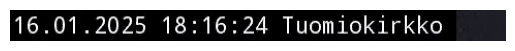

Python module for capturing images from YouTube live
Youtube Live Capture experiment
This experiment focuses on capturing Youtube Live from public cameras monitoring multiple Näkymä Helsingistä locations. We can first extract information about the Youtube Live using the library yt_dlp.
WARNING: skipping cookie file entry due to invalid length 1: '<<<<<<< Updated upstream\n'
WARNING: skipping cookie file entry due to invalid length 1: '=======\n'
WARNING: skipping cookie file entry due to invalid length 1: '<<<<<<< Updated upstream\n'
WARNING: skipping cookie file entry due to invalid length 1: '=======\n'
WARNING: skipping cookie file entry due to invalid length 1: '>>>>>>> Stashed changes\n'
WARNING: skipping cookie file entry due to invalid length 1: '>>>>>>> Stashed changes\n'
[youtube] Extracting URL: https://www.youtube.com/watch?v=LMZQ7eFhm58
[youtube] LMZQ7eFhm58: Downloading webpage
[youtube] LMZQ7eFhm58: Downloading ios player API JSON
[youtube] LMZQ7eFhm58: Downloading tv player API JSON
[youtube] LMZQ7eFhm58: Downloading m3u8 information
At this point, we have obtained a special link for downloading captures from this livestream. This URL is a dynamically generated link used by YouTube for delivering live streaming content via an HLS (HTTP Live Streaming) protocol. We can proceed to donwload content chunks from this link with cv2.
NOTE: This livestream contains a small frame at top left corner to display the current time and location. We can attempt to crop this small frame and extract further information from the captured image.
[youtube] Extracting URL: https://www.youtube.com/watch?v=LMZQ7eFhm58
[youtube] LMZQ7eFhm58: Downloading webpage
[youtube] LMZQ7eFhm58: Downloading ios player API JSON
[youtube] LMZQ7eFhm58: Downloading tv player API JSON
[youtube] LMZQ7eFhm58: Downloading m3u8 information
Cropped frame:

Text in cropped frame: 16.01.2025 18:16:24 Tuomiokirkko
16.01.2025 18:16:24 Tuomiokirkko
File name: cap_2025.01.16_18:16:24_Tuomiokirkko.jpg
Saved to: /home/nghivo/tinyMLaaS/llmcam/data/cap_2025.01.16_18:16:24_Tuomiokirkko.jpg
As such, we can follow this guideline for implementing the modularized functions:
Extract HSL URL from Youtube Live
Capture live images with this URL
Crop small frame and extract further metadata from captured images
Form suitable file names and save captured images
Modularize with Live instances
This section implements the modularized functions with Object-Oriented Programming approach (OOP). Each Youtube Live is managed by a YTLive instance, which captures images from its live stream when prompted.
General Live instance
NOTE: For a generic Youtube Live stream, step 3 in the described workflow is skipped and file name is generated as a combination of the current timestamp and user-input location.
[youtube] Extracting URL: https://www.youtube.com/live/Cp4RRAEgpeU?si=IwqJ4QU1Umv9PdgW
[youtube] Cp4RRAEgpeU: Downloading webpage
[youtube] Cp4RRAEgpeU: Downloading ios player API JSON
[youtube] Cp4RRAEgpeU: Downloading tv player API JSON
[youtube] Cp4RRAEgpeU: Downloading m3u8 information
File path: /home/nghivo/tinyMLaaS/llmcam/data/cap_2025.01.16_18:25:30_santaclausvillage.jpg
Näkymä Helsingistä Live instance
We also add a special support for Näkymä Helsingistä livestream that utilizes the small frame at top left corner to extract metadata and generate file names. This is a subclass that inherits all other functions from YTLive while modifying the file_name function.
For simplification purpose, we implement a general-purpose function that initiate these Live instances and download file to be used in GPT Function calling:
Select the Youtube Live URL based on the location name
Type
Default
Details
location
Optional
Helsinki
Location name, one of [“santaclausvillage”, “parkinglot”, “helsinki”, “satellite”]
Simulated GPT workflow
Test integrating with our current GPT framework:
from llmcam.core.fc import*from llmcam.core.fn_to_schema import function_schematools = [function_schema(capture_youtube_live_frame, "Youtube Live Capture")]messages = form_msgs([ ("system", "You are a helpful system administrator. Use the supplied tools to assist the user."), ("user", "Hi, can you capture YouTube Live?")])complete(messages, tools)print_msgs(messages)
>> System:
You are a helpful system administrator. Use the supplied tools to assist the user.
>> User:
Hi, can you capture YouTube Live?
>> Assistant:
Yes, I can capture an image from a YouTube Live stream. Please provide the YouTube Live link, and if
applicable, specify the location or place you want the image to represent.
# Continue the conversationmessages.append(form_msg("user", "You can use the default link."))complete(messages, tools=tools)print_msgs(messages)
[youtube] Extracting URL: https://www.youtube.com/watch?v=LMZQ7eFhm58
[youtube] LMZQ7eFhm58: Downloading webpage
[youtube] LMZQ7eFhm58: Downloading ios player API JSON
[youtube] LMZQ7eFhm58: Downloading tv player API JSON
[youtube] LMZQ7eFhm58: Downloading m3u8 information
16.01.2025 18:16:39 Tuomiokirkko
>> System:
You are a helpful system administrator. Use the supplied tools to assist the user.
>> User:
Hi, can you capture YouTube Live?
>> Assistant:
Yes, I can capture an image from a YouTube Live stream. Please provide the YouTube Live link, and if
applicable, specify the location or place you want the image to represent.
>> User:
You can use the default link.
>> Assistant:
I have captured an image from the default YouTube Live stream. You can view it
[here](sandbox:/home/nghivo/tinyMLaaS/llmcam/data/cap_2025.01.16_18:16:39_Tuomiokirkko.jpg).
Another scenario (selecting with location):
from llmcam.core.fc import*from llmcam.core.fn_to_schema import function_schematools = [ function_schema(capture_youtube_live_frame, "Youtube Live Capture"), function_schema(select_youtube_live_url, "Select Youtube Live URL")]messages = form_msgs([ ("system", "You are a helpful system administrator. Use the supplied tools to assist the user."), ("user", "Hi, can you capture an image from Santa Claus Village?")])complete(messages, tools)print_msgs(messages)
[youtube] Extracting URL: https://www.youtube.com/watch?v=Cp4RRAEgpeU
[youtube] Cp4RRAEgpeU: Downloading webpage
[youtube] Cp4RRAEgpeU: Downloading ios player API JSON
[youtube] Cp4RRAEgpeU: Downloading tv player API JSON
[youtube] Cp4RRAEgpeU: Downloading m3u8 information
>> System:
You are a helpful system administrator. Use the supplied tools to assist the user.
>> User:
Hi, can you capture an image from Santa Claus Village?
>> Assistant:
I've captured an image from Santa Claus Village for you. You can view it here: [Santa Claus Village
Live
Image](sandbox:/home/nghivo/tinyMLaaS/llmcam/data/cap_2025.01.16_18:25:47_santaclausvillage.jpg).